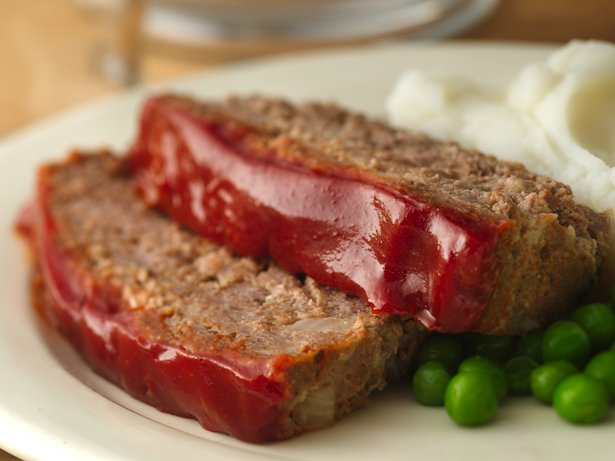

Gluten Free Glazed Meat Loaf

Enjoy this hearty beef loaf glazed with gluten free ketchup – a perfect baked dinner.
Ingredients
- 1 1/2 lb lean (at least 80%) ground beef
- 1/2 cup crushed gluten free cracker crumbs
- 2 tablespoons milk
- 2 tablespoons gluten free ketchup
- 1 tablespoon gluten free Dijon mustard
- 1 teaspoon dried sage leaves
- 1/2 teaspoon salt
- 1/4 teaspoon pepper
- 1 small onion, finely chopped (1/3 cup)
- 1 egg
- 1/2 cup gluten free ketchup
- 1 teaspoon gluten free Dijon mustard
- 1 tablespoon packed brown sugar
Meat Loaf
Glaze
Steps
- Heat oven to 350°F. In large bowl, combine all meat loaf ingredients. Spread mixture in ungreased 8x4- or 9x5-inch loaf pan.
- In small bowl, combine all glaze ingredients. Spread over meat loaf.
- Bake uncovered 1 hour to 1 hour 15 minutes or until thermometer inserted in center of loaf reads 160°F. Drain. Let stand 5 minutes before slicing.